Il programma che crea le licenze di TD Booking Suite per Windows: la chiave, le licenze nuove, quelle da cambiare, il registro. Si porta su una chiavetta.
TD Licenze firma le licenze con la chiave privata di Tastiere Digitali. Il programma dei clienti contiene solo la chiave pubblica: verifica le licenze ma non può crearle, e funziona senza Internet.
TD Licenze.exe. Windows lo segnala come l'MSI e si apre allo stesso modo (Ulteriori informazioni, Esegui comunque).TD Licenze è portatile: salva tutto nella sua cartella, accanto a TD Licenze.exe, e da nessun'altra parte. Se la cartella sta su una chiavetta, sul PC del cliente non resta nessun file del programma.
registro-licenze.csv | tutte le licenze emesse, con numero, cliente, tipo, postazioni, installazione, scadenza e quella che sostituiscono. Con il registro su GitHub è la copia completa anche senza Internet |
credenziali.tdc | gli accessi dei clienti, scheda Credenziali, cifrati con la password della chiave. Con il registro su GitHub anche lì, sempre cifrati |
registro-github.json | la repo del registro e il suo token, cifrato con la password della chiave |
chiave-privata.pem, chiave-pubblica.txt | solo in un TD Licenze senza la chiave dentro (scheda Chiave): la chiave che firma, protetta dalla password, e quella che va nel programma |
licenze-emesse\ | un file per licenza, da mandare al cliente |
TD Licenze.exe, _internal\ | il programma. Per aggiornarlo sostituisci solo questi due: i file della chiave non si toccano |
%APPDATA%\TD Licenze: al primo avvio TD Licenze la porta nella sua cartella e cancella la copia vecchia, quando è identica.La chiave privata firma le licenze. Si crea una volta, poi la build la mette dentro TD Licenze, cifrata con la sua password: ogni TD Licenze scaricato da Actions, su qualunque PC, chiede solo la password. All'apertura la chiave si decifra in memoria; su disco non restano né la chiave in chiaro né la password.
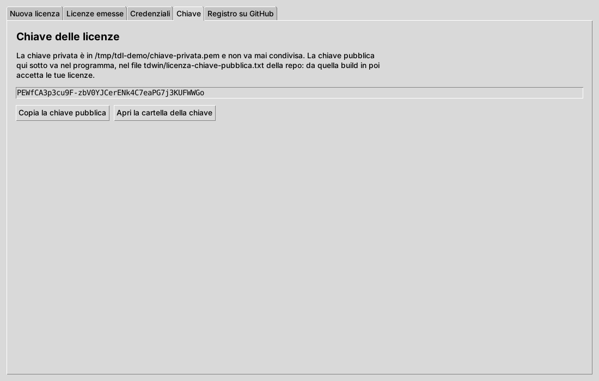
chiave-privata.pem e chiave-pubblica.txt.chiave-pubblica.txt va nella repo, nel file tdwin/licenza-chiave-pubblica.txt. La build lo scrive dentro il codice compilato del programma: nell'MSI non c'è un file con la chiave da sostituire.TD_LICENZE_CHIAVE, valore tutto il contenuto di chiave-privata.pem (aprilo con il Blocco note), righe BEGIN ed END comprese.chiave-privata.pem e la password al sicuro, fuori dal PC: GitHub non fa più rileggere un secret, e senza password nessuno può firmare, neanche tu.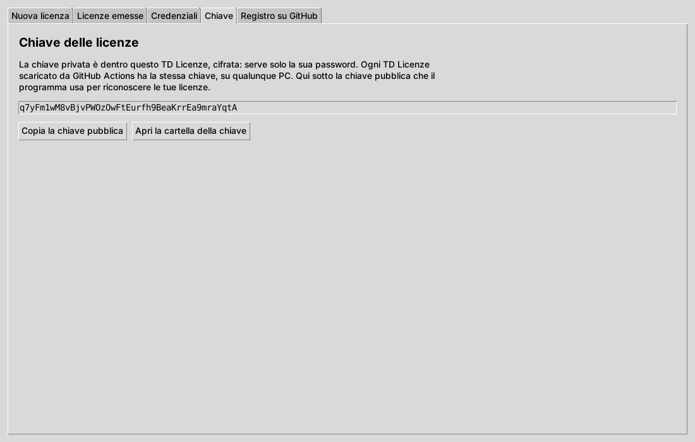
.gitignore blocca i file .pem, il registro e le licenze emesse. Una release senza chiave pubblica si ferma: non accetterebbe nessuna licenza.Senza il secret TD_LICENZE_CHIAVE TD Licenze funziona come prima: la chiave sta nella sua cartella, in chiave-privata.pem.
Il registro delle licenze può stare anche in una repo privata di GitHub, solo per i dati. TD Licenze lo aggiorna da lì all'apertura e dopo ogni licenza: su qualunque PC hai tutte le licenze emesse, e il numero di una licenza nuova segue quelle fatte altrove.
TD-Licenze-Dati, e una repo pubblica e vuota per lo stato delle licenze, TD-Licenze-Stato (vedi sotto, Cambiare o revocare online).TD-Licenze-Dati e TD-Licenze-Stato; in Permissions dai Contents: Read and write. Scegli una scadenza. Un token che hai già si modifica dalla stessa pagina, aggiungendo la seconda repo.registro-github.json, cifrato con quella password.TD_LICENZE_REGISTRO con tutto il contenuto di registro-github.json. Dalla build dopo, un TD Licenze nuovo trova la repo da solo e chiede solo la password.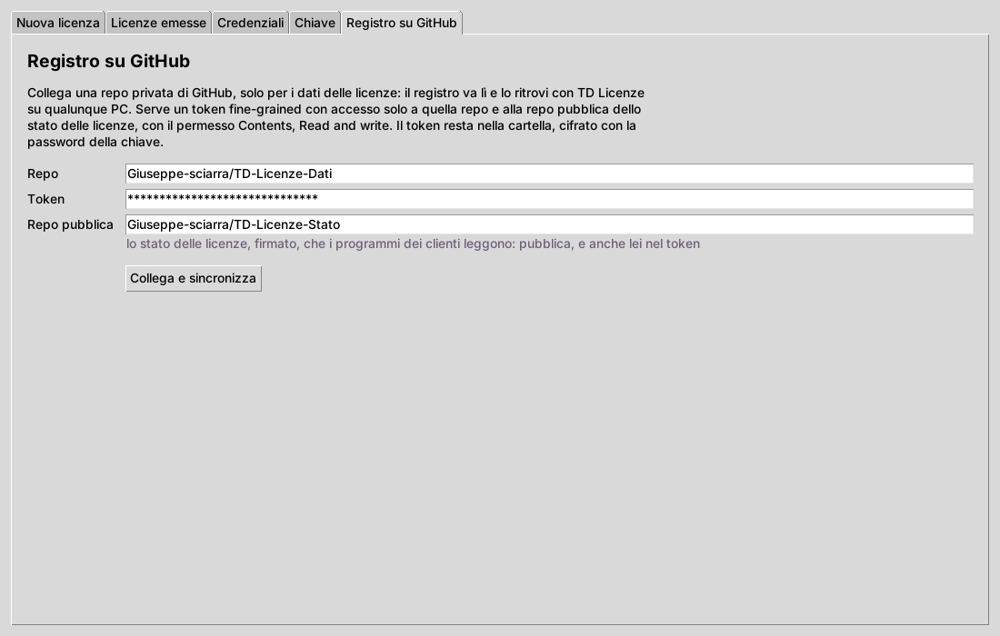
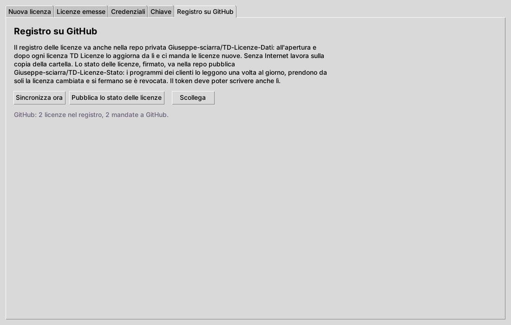
| Se… | Cosa succede |
|---|---|
| non c'è Internet | TD Licenze lavora sulla copia della cartella e manda le licenze nuove alla prossima sincronizzazione |
| due PC scrivono insieme | se il registro su GitHub cambia mentre scrive, lo rilegge e unisce: nessuna licenza si perde |
| fai licenze su due PC senza Internet | possono avere lo stesso numero: restano tutte e due nel registro. Quando puoi, fai le licenze collegato |
| il token scade | TD Licenze lo dice. Fanne uno nuovo, collega di nuovo la repo e, se lo usi, aggiorna il secret TD_LICENZE_REGISTRO |
| premi Scollega | il registro resta nella cartella e su GitHub; quel TD Licenze non lo aggiorna più |
registro-licenze.csv: numeri, clienti, tipo, postazioni, scadenze e il testo delle licenze. La chiave privata e il token restano fuori.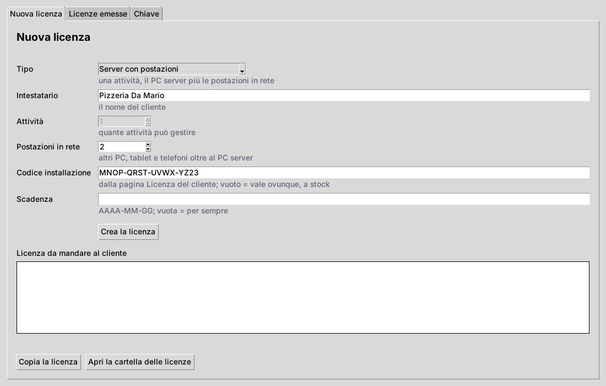
| Campo | Cosa scrivere |
|---|---|
| Tipo | Un PC solo (1 attività, nessuna postazione), Server con postazioni (1 attività, le postazioni che vuoi), Portale, più attività (2 o più attività). |
| Intestatario | Il nome del cliente. |
| Attività | Solo per il Portale. |
| Postazioni in rete | Altri PC, tablet e telefoni oltre al PC server. |
| Codice installazione | Quello che il cliente vede nella pagina Licenza e ti manda. Vuoto: la licenza vale ovunque, a stock. |
| Scadenza | AAAA-MM-GG, vuota per sempre. |
Premi Crea la licenza: la licenza compare nel riquadro e con Copia la licenza la mandi al cliente. Resta anche come file in licenze-emesse\ e nel registro.
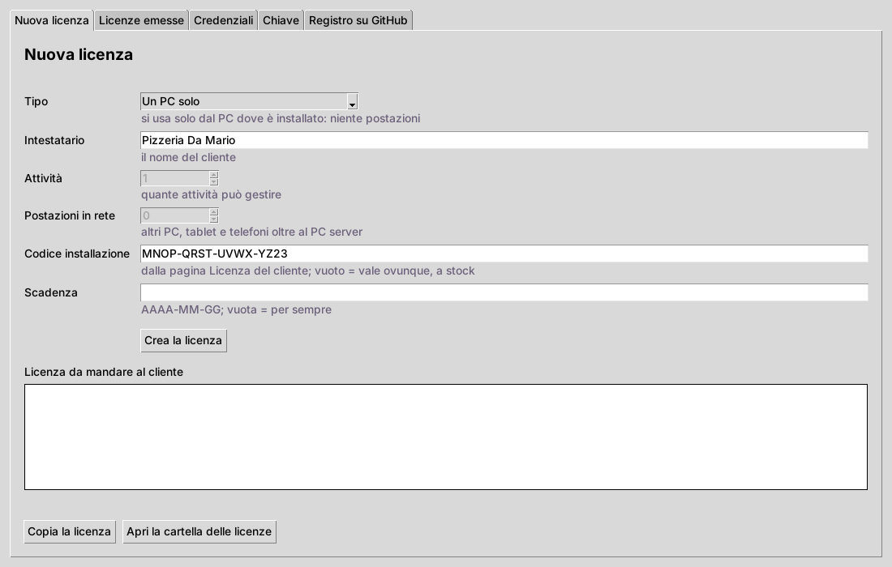
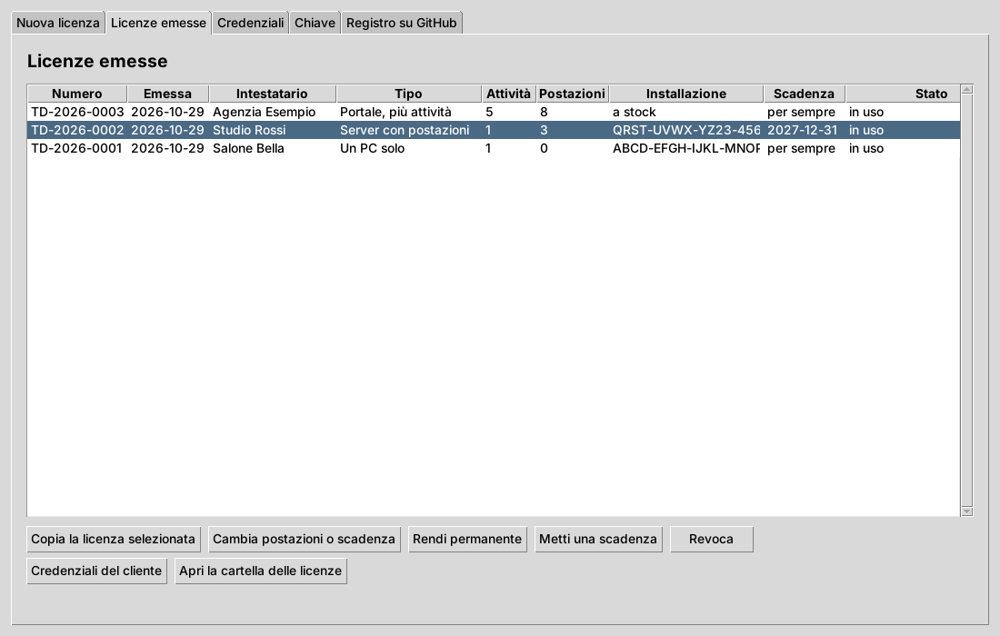
Con il registro su GitHub collegato, Aggiorna da GitHub porta qui le licenze fatte sugli altri PC.
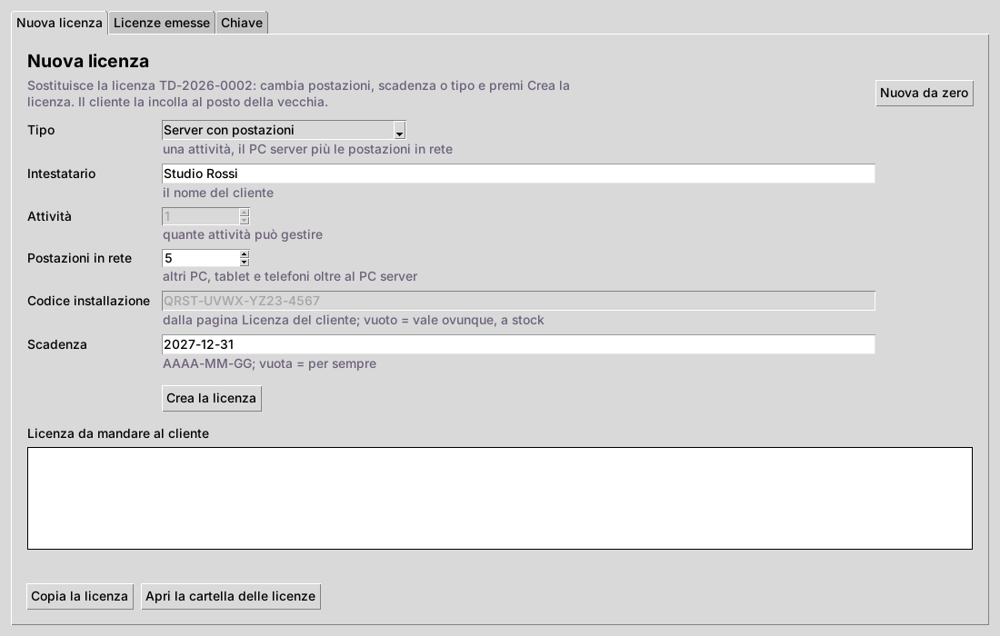
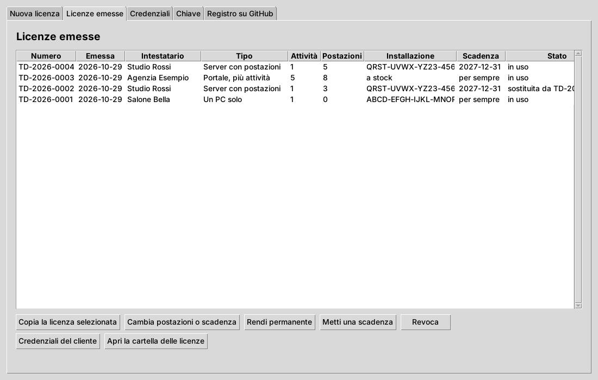
Nuova da zero torna a una licenza nuova, senza legami con quella di prima.
In Licenze emesse, sulla licenza selezionata:
| Rendi permanente | una licenza nuova uguale, senza scadenza, che sostituisce quella |
| Metti una scadenza | chiede la data e fa la licenza nuova fino a quel giorno, anche partendo da una permanente |
| Revoca | la licenza smette di valere: il programma si ferma come a fine prova, restano aperte Licenza e Backup e i dati non si toccano |
Con il registro su GitHub collegato, dopo ognuna di queste, e dopo Cambia postazioni o scadenza, TD Licenze pubblica nella repo pubblica lo stato delle licenze, firmato con la tua chiave. Il programma di ogni cliente lo legge da solo una volta al giorno, quando è online (o subito, con Controlla ora nella sua pagina Licenza):
Il file è pubblico ma non dice niente: per ogni installazione la sua licenza è cifrata con il suo codice, che conosce solo lei, e le revocate sono solo impronte. Nessuno può falsificarlo senza la tua chiave, e uno stato vecchio rimandato non annulla una revoca. Pubblica lo stato delle licenze, nella scheda Registro su GitHub, lo rifà quando vuoi.
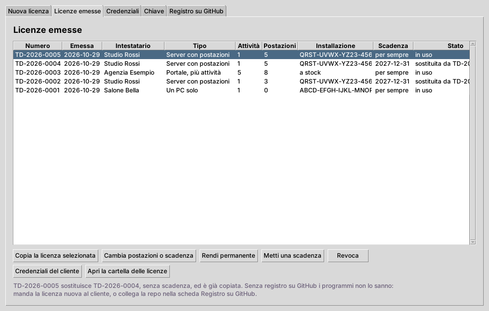
Gli accessi che crei installando il programma, per non perderli: l'amministratore del programma, i titolari, le persone dell'attività, la password dei backup, i codici di recupero e del primo avvio, l'invio email, Telegram, il sito, la rete. Ognuno con cliente, licenza, tipo, nome, username, email, password, indirizzo, codici e note.
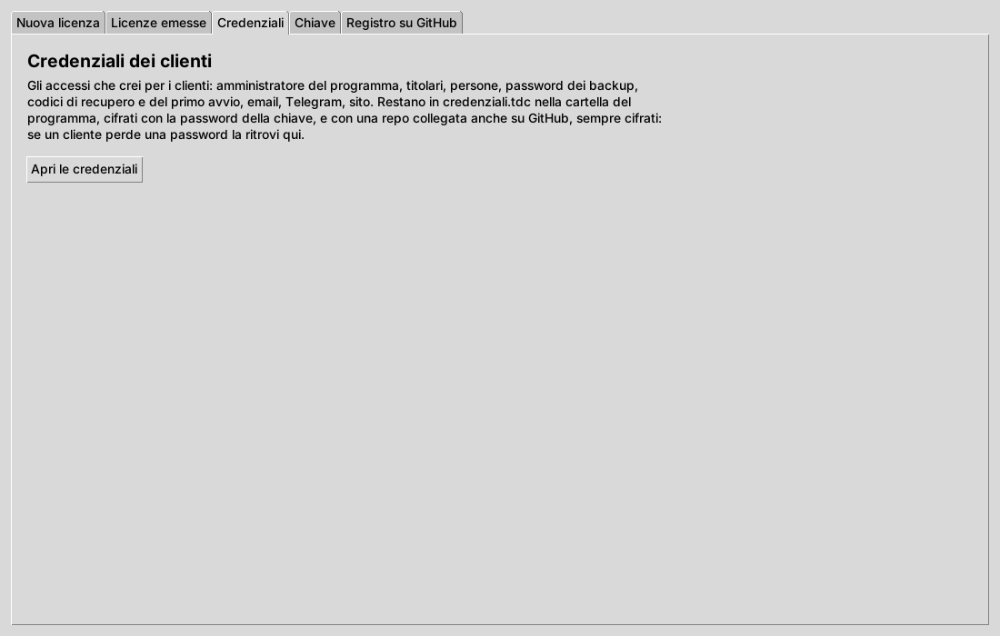
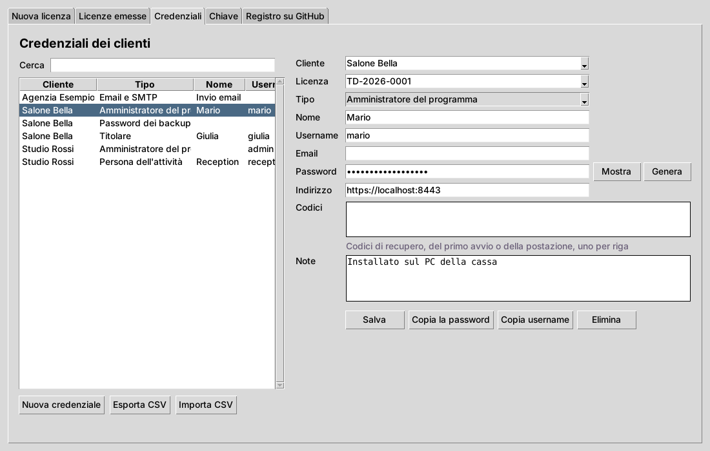
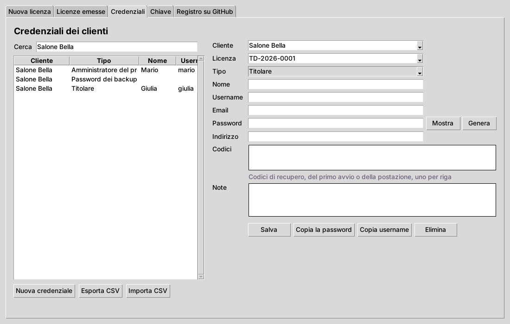
credenziali.tdc, cifrato con la password della chiave: senza quella il file non si legge. Con il registro su GitHub collegato le credenziali vanno anche nella repo privata, sempre cifrate, e arrivano su ogni PC con TD Licenze; una credenziale eliminata sparisce anche dagli altri PC.| Il cliente… | Cosa succede |
|---|---|
| reinstalla il programma sullo stesso PC e ripristina un backup | il codice installazione torna quello di prima e la licenza vale ancora |
| reinstalla Windows o cambia PC | nuovo codice installazione: gli fai una licenza nuova da Nuova licenza con il codice nuovo (Cambia postazioni o scadenza tiene il codice della vecchia) |
| copia la cartella dei dati su un altro PC | il codice cambia e la licenza non vale lì |
| ha più attività di quelle della licenza nuova | il programma rifiuta la licenza e lo spiega |
| ha più postazioni registrate | restano attive quelle registrate per prime, finché non ne revoca |
| arriva alla scadenza | il programma si ferma come a fine prova: restano aperte Licenza e Backup |
| ha una licenza che hai revocato | quando il suo PC va online si ferma come a fine prova; offline continua finché non si collega |
| sposta indietro la data del PC | prova e scadenza si contano dall'ultimo uso: non si allungano |
| cancella la prova dal database | la prova resta usata: il segno sta anche nella cartella dei dati |
Per chi preferisce: licenze/td_licenze.py fa le stesse cose. Servono Python 3 e pip install cryptography. Di serie lavora nella sua cartella; con --cartella sceglie un'altra cartella, per esempio quella di TD Licenze sulla chiavetta.
python td_licenze.py chiave la prima volta python td_licenze.py fa le domande python td_licenze.py crea --intestatario "Bar Roma" --tipo server --postazioni 3 --installazione ABCD-EFGH-IJKL-MNOP --scadenza 2027-12-31 python td_licenze.py crea --sostituisce TD-2026-0007 --postazioni 5 python td_licenze.py elenco le licenze emesse python td_licenze.py verifica incolli una licenza e vedi cosa contiene python td_licenze.py collega Giuseppe-sciarra/TD-Licenze-Dati la repo del registro, chiede il token python td_licenze.py sincronizza registro aggiornato con GitHub
Con una repo collegata, crea aggiorna il registro prima e dopo la licenza. Con --sostituisce quello che non scrivi resta come nella licenza sostituita: cambiando le postazioni la scadenza resta, cambiando la scadenza restano le postazioni. --scadenza "" la toglie.